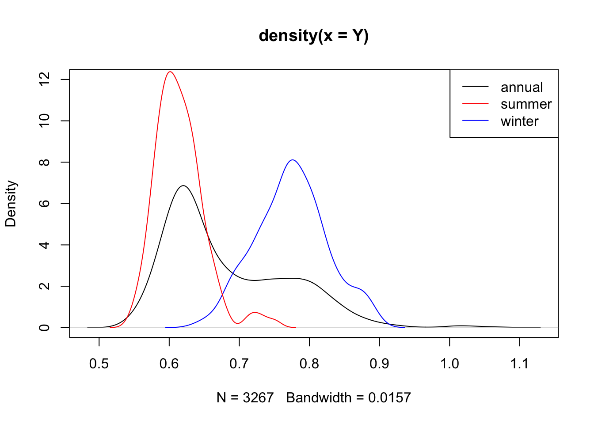
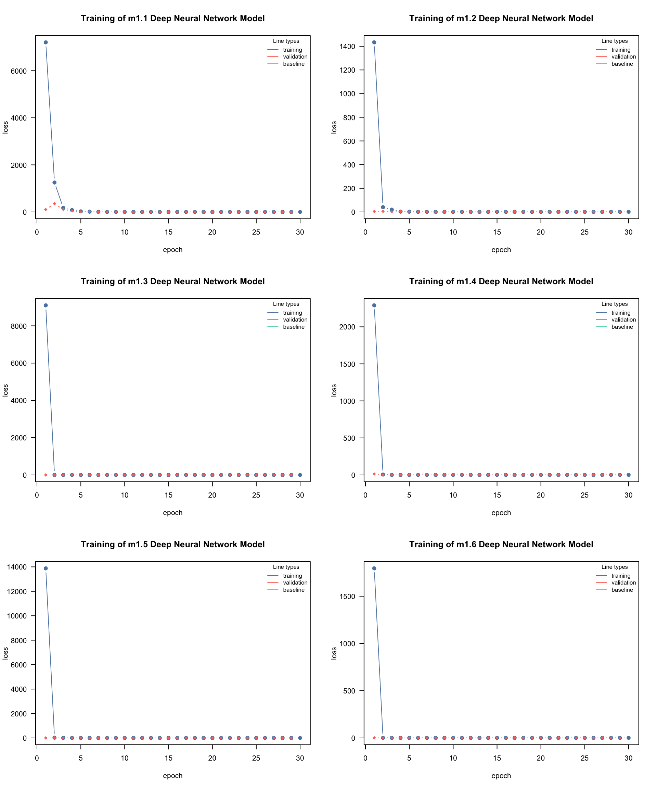
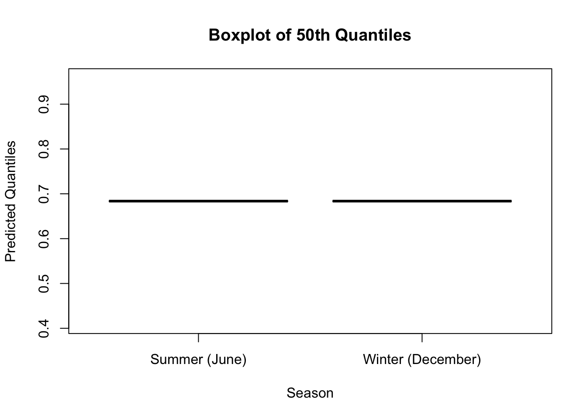
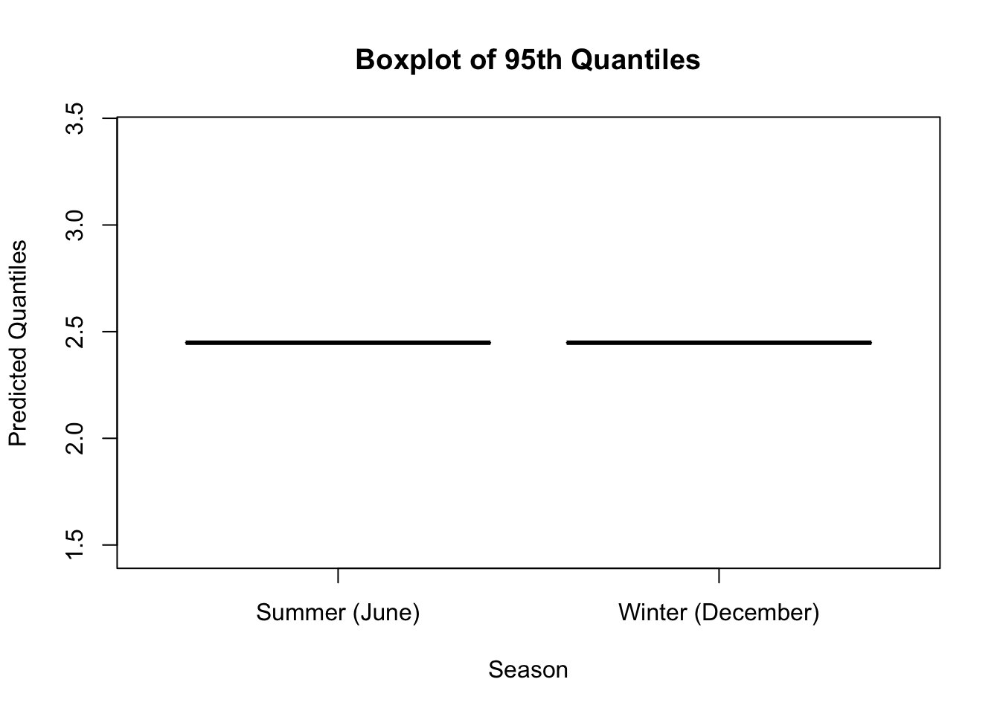

Week 3 - Assignment 2: Estimating Australia Electricity Demand
Author
Group 2: Carlos, Landon, and Elias.
Published
June 14, 2026
Introduction
Basics and setup
The goal of this assignment is to answer two questions for the Australia demand data:
Is the mean demand different for summer vs. winter?
Is the 95th percentile (\(\tau = 0.95\)) of demand different for summer vs. winter.
We will use June for winter and December for summer. Let’s clean up the data first and then we can see why this is interesting.
Code
rm(list =ls()) # clear the environmentdata("AUDem", package ="qgam") # load the data from the qgam packagemeanDem <- AUDem$meanDem # extract the mean demand data frame# str(meanDem) # check the structure of the data framelibrary(lubridate) # need this for date-time tinkeringmonths <-month(meanDem$date) #might throw warnings, can be ignoredyears <-year(meanDem$date) #might throw warnings, can be ignoredY <- meanDem$demstr(Y) # check the structure of the response variable
num [1:3267] 0.825 0.869 0.852 0.846 0.846 ...
I’m now going to plot the distribution of demand for the entire year, and overlay the two other months’ distributions atop it.
Code
plot(density(Y),ylim =c(0,12)) # plot the density of the entire year's demandlines(density(Y[months==6]),col='blue') # plot the density for the month of June (winter) in bluelines(density(Y[months==12]),col='red') # plot the density for the month of December (summer) in redlegend('topright',legend =c('annual','summer','winter'), lty =1, col =c('black','red','blue'))

So while the overall distribution probably needs a mixture distribution, if we have a covariate for the month, \([Y\mid \mbox{month}]\) has a normal-ish distribution.
We will fit a normal distribution to the data using what we called Model 1 earlier, and estimate the mean and quantiles from there. Recall the loss function:
Code
library(torch)library(cito)## Model 1 loss functiongaussian_nll =function(pred, true, ...) { loss =-torch::distr_normal(pred, scale = torch::torch_exp(scale_par))$log_prob(true)return(loss$mean())} # this function calculates the negative log-likelihood for a normal distribution
Let me clean up the covariates for you:
Code
X <- meanDem[,c(2,5,7)] # select the 2nd, 5th, and 7th columns from the meanDem data frame as covariatesX <-cbind(X,months,years) # add the months and years as additional covariates to the X data framedem_df <-cbind(Y,X) # combine the response variable Y with the covariates X into a single data frame called dem_dfhead(dem_df,3) # check the first few rows of the combined data frame to ensure it looks correct
Y tod temp dem48 months years
1 0.8248777 18.0 3.357407 0.8978636 7 2010
2 0.8686110 18.5 2.517073 0.9417633 7 2010
3 0.8519471 19.0 1.898399 0.9148921 7 2010
Code
str(dem_df) # check the structure of the combined data frame
'data.frame': 3267 obs. of 6 variables:
$ Y : num 0.825 0.869 0.852 0.846 0.846 ...
$ tod : num 18 18.5 19 19.5 20 20.5 21 21.5 22 18 ...
$ temp : num 3.36 2.52 1.9 1.67 1.94 ...
$ dem48 : num 0.898 0.942 0.915 0.898 0.894 ...
$ months: num 7 7 7 7 7 7 7 7 7 7 ...
$ years : num 2010 2010 2010 2010 2010 2010 2010 2010 2010 2010 ...
dem48 in particular has a strong positive correlation with our response, dem (Y in the dataframe)
Question 1 - Fitting the model and model valiation
Fit \(Y\sim .\) using Model 1 defined above. Guidelines for each model:
Have at least\(0.2\)validation split in each case (this will be a model option).
There is no need to have a separate testing set, since we don’t care about predictions for new data, but more of a testing of hypothesis.
Look up other type of layers and options that dnn provides to improve your model fits as necessary
You can choose the best model in one of two ways (there is always a trade-off):
Find the architecture which gives the lowest loss (training and/or validation)
Find the architecture which gives you the lowest RMSE (or MSE)
Choose your final architecture for Model 1 and proceed to the next questions.
Question 2 - Getting predictions
Do the following steps from the fitted model:
Subset the data to make separate dataframes for June and December. For example, dem6 <- dem_df[months==6,] will subset the June values for you. There are other ways to do this subsetting as well. There should be 270 data points for June and 279 data points for December
Get predictions for each season. There should therefore be 2 different sets of predictions. Save them as m1_6 andm1_12. The names should be self-explanatory.
Question 3 - Getting quantiles for the Normal distribution
Your output for each model will be a vector of pred values (which is the mean), and a single estimate of sigma, the standard deviation. The actual variable names will depend on your own code. A key insight is that for a Normal distribution, mean = median = mode.
Code
# Note - this code will not run since it is just a demo!m1_6_50 <- pred # vector of meansm1_6_95 <-qnorm(0.95,mean = pred, sd = sigma) # vector of 0.95 quantiles
The code above will give you the estimates of mean and 0.95 quantile for the gaussian model for June. You can similarly get predictions for December. The final 4 variables could be called something like m1_6_50, m1_6_95, m1_12_50, m1_6_95.
Question 4 - Comparison of electricity use
We are finally ready to answer our questions! We want to do 2 sets of comparisons:
m1_6_50 vs m1_12_50, and m1_6_95 vs m1_12_95,
There are a two ways to do this:
Visually - You can plot these as density plots, or boxplots, and see if there is any overlap. The more they overlap, the more similar they are.
Formal testing - Use a Wilcoxon rank-sum test (wilcox.test in R with 2 vectors; also use the alternative = 'two sided' as a function option).
Save your results for reuse in Assignment 3!
The simplest way to do this would be to use use code like this:
If you want to save more stuff, just add the names of the objects in the code. Remember that the file argument goes last.
What should be in the final submission?
I don’t need to see all details/description of your code (since I provided details anyway). Do report:
Final architectures you chose for the model, and its RMSE. (The loss is not intepretable as a number, but the RMSE is).
What kind of settings you tried before getting to your final model
How you tested Q4 and your conclusions
Answer 1 - Fit the model and model validation
To fit the model, we will use the loss function we defined earlier, gaussian_nll, and the cito::dnn function to fit a Deep Neural Network (DNN) to the data. We will use a validation split of 0.2, and train for 150 epochs. We will use the Adam optimizer, and ReLU activation function.
After running a few preliminary test runs we decided to set the epochs to 30 since the model was already converging by then, and the overfitting was present but not severe, so we decided to stop training at 30 epochs to save time as increasing the epochs did not improve the results significantly.
We defined the different architectures we want to try in the following table including the number of hidden layers and the number of neurons per layer, epochs, and the validation split:
Architecture
Hidden Layers
Neurons per Layer
Epochs
Validation Split
m1.1
2
50
30
0.2
m1.2
3
50
30
0.2
m1.3
3
100
30
0.2
m1.4
4
100
30
0.2
m1.5
4
150
30
0.2
m1.6
5
150
30
0.2
After experimenting with different numbers of hidden layers and neurons per layer, we found that a model with 3 hidden layers and 100 neurons per layer performed well. We monitored the training and validation loss during training, and stopped training when the validation loss started very slightly increasing, which indicated that the model started overfitting to the training data particularly in m1.5.
Lets’ fit the models and visualize the training process:
Warning: the 'nobars' function has moved to the reformulas package. Please update your imports, or ask an upstream package maintainer to do so.
This warning is displayed once per session.
Code
cito:::visualize.training(losses = m1.1$losses,epoch =nrow(m1.1$losses),main ="Training of m1.1 Deep Neural Network Model",new =TRUE)m1.2<- cito::dnn(Y ~ ., data = dem_df, loss = gaussian_nll, epochs =30, verbose = F, validation =0.2, custom_parameters =list(scale_par =0.0), activation ="relu", optimizer ='adam', hidden =c(50,50,50), plot =FALSE)cito:::visualize.training(losses = m1.2$losses,epoch =nrow(m1.2$losses),main ="Training of m1.2 Deep Neural Network Model",new =TRUE)m1.3<- cito::dnn(Y ~ ., data = dem_df, loss = gaussian_nll, epochs =30, verbose = F, validation =0.2, custom_parameters =list(scale_par =0.0), activation ="relu", optimizer ='adam', hidden =c(100,100,100), plot =FALSE)cito:::visualize.training(losses = m1.3$losses,epoch =nrow(m1.3$losses),main ="Training of m1.3 Deep Neural Network Model",new =TRUE)m1.4<- cito::dnn(Y ~ ., data = dem_df, loss = gaussian_nll, epochs =30, verbose = F, validation =0.2, custom_parameters =list(scale_par =0.0), activation ="relu", optimizer ='adam', hidden =c(100,100,100,100), plot =FALSE)cito:::visualize.training(losses = m1.4$losses,epoch =nrow(m1.4$losses),main ="Training of m1.4 Deep Neural Network Model",new =TRUE)m1.5<- cito::dnn(Y ~ ., data = dem_df, loss = gaussian_nll, epochs =30, verbose = F, validation =0.2, custom_parameters =list(scale_par =0.0), activation ="relu", optimizer ='adam', hidden =c(150,150,150,150), plot = F)cito:::visualize.training(losses = m1.5$losses,epoch =nrow(m1.5$losses),main ="Training of m1.5 Deep Neural Network Model",new =TRUE)m1.6<- cito::dnn(Y ~ ., data = dem_df, loss = gaussian_nll, epochs =30, verbose = F, validation =0.2, custom_parameters =list(scale_par =0.0), activation ="relu", optimizer ='adam', hidden =c(150,150,150,150,150), plot =FALSE)cito:::visualize.training(losses = m1.6$losses,epoch =nrow(m1.6$losses),main ="Training of m1.6 Deep Neural Network Model",new =TRUE)

To determine the best architecture we calculate RMSE for each model to have a more interpretable metric to evaluate performance. The model with the lowest RMSE is generally considered the best. However, we should also consider the complexity of the model and whether it is overfitting or underfitting. A simpler model with a slightly higher RMSE may be preferable if it generalizes better to new data.
The best model will be the one with the lowest RMSE. We can also visually inspect the training and validation loss plots to ensure that the model is not overfitting or underfitting.
Code
# Best model based on RMSEbest_model <- rmse_results[which.min(rmse_results$RMSE), "Model"]print(paste("The best model is:", best_model))
[1] "The best model is: m1.4"
Answer 2 - Getting Predictions
Subset the data for June and December
Code
# Subset the data for June and Decemberdem6 <- dem_df[months ==6, ]dem12 <- dem_df[months ==12, ]
Check the structure of the subsets:
Code
str(dem6)
'data.frame': 270 obs. of 6 variables:
$ Y : num 0.713 0.747 0.747 0.741 0.722 ...
$ tod : num 18 18.5 19 19.5 20 20.5 21 21.5 22 18 ...
$ temp : num 12.5 12.4 12.2 12.2 12.3 ...
$ dem48 : num 0.721 0.756 0.764 0.748 0.712 ...
$ months: num 6 6 6 6 6 6 6 6 6 6 ...
$ years : num 2011 2011 2011 2011 2011 ...
Code
str(dem12)
'data.frame': 279 obs. of 6 variables:
$ Y : num 0.59 0.629 0.639 0.635 0.636 ...
$ tod : num 18 18.5 19 19.5 20 20.5 21 21.5 22 18 ...
$ temp : num 18.1 18 18.1 18.3 18.7 ...
$ dem48 : num 0.572 0.593 0.594 0.61 0.604 ...
$ months: num 12 12 12 12 12 12 12 12 12 12 ...
$ years : num 2010 2010 2010 2010 2010 2010 2010 2010 2010 2010 ...
Get predictions:
Get predictions for each season using the best model m1.3 based on the RMSE results from the previous step. We need to use the covariates for June and December to get the predictions. The response variable Y is not included in the new data for prediction because we want to predict it based on the covariates.
The predictions m1_6 and m1_12 will be vectors of predicted mean demand for June and December, respectively. We can use these predictions to calculate the quantiles in the next step.
Answer 3 - Getting quantiles for the Normal distribution
Calculate the 50th and 95th quantiles for June and December using the predicted means and the estimated standard deviation from the model. The standard deviation can be obtained from the scale_par parameter of the model, which is exponentiated to ensure it is positive.
Get the estimated standard deviation from the model
Get the estimated standard deviation from the model and convert it to a numeric value
Code
sigma <-as.numeric(exp(m1.3$parameter$scale_par))
Calculate the 50th and 95th quantiles for June
Code
m1_6_50 <- m1_6 # the 50th quantile is the same as the mean for a normal distributionm1_6_95 <-qnorm(0.95, mean = m1_6, sd = sigma) # calculate the 95th quantile for June
Calculate the 50th and 95th quantiles for December
Code
m1_12_50 <- m1_12 # the 50th quantile is the same as the mean for a normal distributionm1_12_95 <-qnorm(0.95, mean = m1_12, sd = sigma) # calculate the 95th quantile for December
The variables m1_6_50, m1_6_95, m1_12_50, and m1_12_95 now contain the predicted 50th and 95th quantiles for June and December, respectively. We can use these quantiles to compare the electricity demand between the two seasons in the next step.
Check the structure of the quantiles:
Code
str(m1_6_50)
num [1:270] 0.684 0.684 0.684 0.684 0.684 ...
Code
str(m1_6_95)
num [1:270] 2.45 2.45 2.45 2.45 2.45 ...
Code
str(m1_12_50)
num [1:279] 0.684 0.684 0.684 0.684 0.684 ...
Code
str(m1_12_95)
num [1:279] 2.45 2.45 2.45 2.45 2.45 ...
Answer 4 - Comparison of Electricity Use
To compare the electricity demand between June and December, we can use the Wilcoxon rank-sum test (also known as the Mann-Whitney U test) to compare the distributions of the predicted quantiles for each season. This test is non-parametric and does not assume normality of the data.
Code
#Model 1 Jun 50 - Dec 50wilcox.test(x = m1_6_50, y = m1_12_50, alternative ='two.sided') # compare the 50th quantiles for June and December
Wilcoxon rank sum test with continuity correction
data: m1_6_50 and m1_12_50
W = 37665, p-value = NA
alternative hypothesis: true location shift is not equal to 0
Code
#Model 1 Jun 95 - Dec 95wilcox.test(x = m1_6_95, y = m1_12_95, alternative ='two.sided') # compare the 95th quantiles for June and December
Wilcoxon rank sum test with continuity correction
data: m1_6_95 and m1_12_95
W = 37665, p-value = NA
alternative hypothesis: true location shift is not equal to 0
Plot the distributions of the predicted quantiles for June and December using boxplots to visually assess the differences in electricity demand between the two seasons.
Code
# Boxplot for the 50th quantiles with labelsboxplot(m1_6_50, m1_12_50, names =c("Summer (June)", "Winter (December)"), ylab ="Predicted Quantiles", xlab ="Season", main ="Boxplot of 50th Quantiles")

Code
# Boxplot for the 95th quantilesboxplot(m1_6_95, m1_12_95, names =c("Summer (June)", "Winter (December)"), ylab ="Predicted Quantiles", xlab ="Season", main ="Boxplot of 95th Quantiles")

The results of the Wilcoxon tests will indicate whether there is a statistically significant difference in the 50th and 95th quantiles of electricity demand between Summer (June) and Winter (December). The boxplots will show the median, interquartile range, and potential outliers for the predicted quantiles in June and December, allowing us to visually assess the differences in electricity demand between the two seasons. A p-value less than 0.05 would typically be considered statistically significant, suggesting that there is a difference in demand between the two seasons. The boxplots will help us visualize the distribution of these predicted quantiles and assess whether there are any noticeable differences between the two seasons. Because the mean for summer is higher than the mean for winter, we would expect the 50th and 95th quantiles for summer to be higher than those for winter, which would indicate that electricity demand is generally higher in summer compared to winter.
---title: "University of Arkansas STAT6393V - Week 3"subtitle: "Week 3 - Assignment 2: Estimating Australia Electricity Demand"author: "Group 2: Carlos, Landon, and Elias."date: 2026-06-14format: html: papersize: letter fontsize: 11pt geometry: margin=1in number-sections: true toc: false pdf: pdf-engine: xelatex embed-resources: true papersize: letter fontsize: 11pt geometry: margin=1in number-sections: true toc: false---:::{.callout-note collapse="true"}## Introduction**Basics and setup**The goal of this assignment is to answer two questions for the Australia demand data: 1. Is the mean demand different for summer vs. winter?2. Is the 95th percentile ($\tau = 0.95$) of demand different for summer vs. winter.We will use June for winter and December for summer. Let's clean up the data first and then we can see why this is interesting.```{r, echo=T, message=FALSE, warning=FALSE}rm(list =ls()) # clear the environmentdata("AUDem", package ="qgam") # load the data from the qgam packagemeanDem <- AUDem$meanDem # extract the mean demand data frame# str(meanDem) # check the structure of the data framelibrary(lubridate) # need this for date-time tinkeringmonths <-month(meanDem$date) #might throw warnings, can be ignoredyears <-year(meanDem$date) #might throw warnings, can be ignoredY <- meanDem$demstr(Y) # check the structure of the response variable```I'm now going to plot the distribution of demand for the entire year, and overlay the two other months' distributions atop it.```{r, sil}plot(density(Y),ylim =c(0,12)) # plot the density of the entire year's demandlines(density(Y[months==6]),col='blue') # plot the density for the month of June (winter) in bluelines(density(Y[months==12]),col='red') # plot the density for the month of December (summer) in redlegend('topright',legend =c('annual','summer','winter'), lty =1, col =c('black','red','blue'))```So while the overall distribution probably needs a mixture distribution, if we have a covariate for the month, $[Y\mid \mbox{month}]$ has a normal-ish distribution.We will fit a normal distribution to the data using what we called **Model 1** earlier, and estimate the mean and quantiles from there. Recall the loss function:```{r}library(torch)library(cito)## Model 1 loss functiongaussian_nll =function(pred, true, ...) { loss =-torch::distr_normal(pred, scale = torch::torch_exp(scale_par))$log_prob(true)return(loss$mean())} # this function calculates the negative log-likelihood for a normal distribution```Let me clean up the covariates for you:```{r}X <- meanDem[,c(2,5,7)] # select the 2nd, 5th, and 7th columns from the meanDem data frame as covariatesX <-cbind(X,months,years) # add the months and years as additional covariates to the X data framedem_df <-cbind(Y,X) # combine the response variable Y with the covariates X into a single data frame called dem_dfhead(dem_df,3) # check the first few rows of the combined data frame to ensure it looks correctstr(dem_df) # check the structure of the combined data frame````dem48` in particular has a strong positive correlation with our response, `dem` (`Y` in the dataframe)**Question 1 - Fitting the model and model valiation**Fit $Y\sim .$ using **Model 1** defined above. Guidelines for each model:1. Have *at least* $0.2$ **validation split** in each case (this will be a model option).2. There is no need to have a separate testing set, since we don't care about predictions for new data, but more of a testing of hypothesis.3. Look up other type of layers and options that `dnn` provides to improve your model fits as necessary4. You can choose the best model in one of two ways (there is always a trade-off): - Find the architecture which gives the lowest loss (training and/or validation) - Find the architecture which gives you the lowest RMSE (or MSE)5. Choose your final architecture for **Model 1** and proceed to the next questions.**Question 2 - Getting predictions**Do the following steps from the fitted model:1. Subset the data to make separate dataframes for June and December. For example, `dem6 <- dem_df[months==6,]` will subset the June values for you. There are other ways to do this subsetting as well. There should be 270 data points for June and 279 data points for December2. Get predictions for each season. There should therefore be 2 different sets of predictions. Save them as `m1_6` and`m1_12`. The names should be self-explanatory.**Question 3 - Getting quantiles for the Normal distribution** Your output for each model will be a vector of `pred` values (which is the mean), and a single estimate of `sigma`, the standard deviation. The actual variable names will depend on your own code. A key insight is that for a Normal distribution, **mean = median = mode**.```{r, eval=F}# Note - this code will not run since it is just a demo!m1_6_50 <- pred # vector of meansm1_6_95 <-qnorm(0.95,mean = pred, sd = sigma) # vector of 0.95 quantiles```The code above will give you the estimates of mean and 0.95 quantile for the gaussian model for June. You can similarly get predictions for December. The final 4 variables could be called something like `m1_6_50, m1_6_95, m1_12_50, m1_6_95`.**Question 4 - Comparison of electricity use**We are finally ready to answer our questions! We want to do 2 sets of comparisons:`m1_6_50` vs `m1_12_50`, and `m1_6_95` vs `m1_12_95`,There are a two ways to do this:1. Visually - You can plot these as density plots, or boxplots, and see if there is any overlap. The more they overlap, the more similar they are.2. Formal testing - Use a [Wilcoxon rank-sum test](https://en.wikipedia.org/wiki/Mann%E2%80%93Whitney_U_test) (`wilcox.test` in `R` with 2 vectors; also use the `alternative = 'two sided'` as a function option).**Save your results for reuse in Assignment 3!**The simplest way to do this would be to use use code like this:```{r, eval=F}save(m1_12_50,m1_12_95, file ='Assignment2_results.RData')```If you want to save more stuff, just add the names of the objects in the code. Remember that the `file` argument goes last.**What should be in the final submission?**I don't need to see all details/description of your code (since I provided details anyway). Do report:1. Final architectures you chose for the model, and its RMSE. (The loss is not intepretable as a number, but the RMSE is).2. What kind of settings you tried before getting to your final model3. How you tested Q4 and your conclusions::::::{.callout-note collapse="true"}## Answer 1 - Fit the model and model validationTo fit the model, we will use the loss function we defined earlier, `gaussian_nll`, and the `cito::dnn` function to fit a Deep Neural Network (DNN) to the data. We will use a validation split of 0.2, and train for 150 epochs. We will use the Adam optimizer, and ReLU activation function.After running a few preliminary test runs we decided to set the epochs to 30 since the model was already converging by then, and the overfitting was present but not severe, so we decided to stop training at 30 epochs to save time as increasing the epochs did not improve the results significantly.We defined the different architectures we want to try in the following table including the number of hidden layers and the number of neurons per layer, epochs, and the validation split:| Architecture | Hidden Layers | Neurons per Layer | Epochs | Validation Split ||--------------|---------------|-------------------|--------|------------------|| m1.1 | 2 | 50 | 30 | 0.2 || m1.2 | 3 | 50 | 30 | 0.2 || m1.3 | 3 | 100 | 30 | 0.2 || m1.4 | 4 | 100 | 30 | 0.2 || m1.5 | 4 | 150 | 30 | 0.2 || m1.6 | 5 | 150 | 30 | 0.2 |After experimenting with different numbers of hidden layers and neurons per layer, we found that a model with 3 hidden layers and 100 neurons per layer performed well. We monitored the training and validation loss during training, and stopped training when the validation loss started very slightly increasing, which indicated that the model started overfitting to the training data particularly in m1.5.**Lets' fit the models and visualize the training process:**```{r}#| fig-width: 10#| fig-height: 12par(mfrow=c(3,2))m1.1<- cito::dnn(Y ~ ., data = dem_df, loss = gaussian_nll, epochs =30, verbose = F, validation =0.2, custom_parameters =list(scale_par =0.0), activation ="relu", optimizer ='adam', hidden =c(50,50), plot =FALSE)cito:::visualize.training(losses = m1.1$losses,epoch =nrow(m1.1$losses),main ="Training of m1.1 Deep Neural Network Model",new =TRUE)m1.2<- cito::dnn(Y ~ ., data = dem_df, loss = gaussian_nll, epochs =30, verbose = F, validation =0.2, custom_parameters =list(scale_par =0.0), activation ="relu", optimizer ='adam', hidden =c(50,50,50), plot =FALSE)cito:::visualize.training(losses = m1.2$losses,epoch =nrow(m1.2$losses),main ="Training of m1.2 Deep Neural Network Model",new =TRUE)m1.3<- cito::dnn(Y ~ ., data = dem_df, loss = gaussian_nll, epochs =30, verbose = F, validation =0.2, custom_parameters =list(scale_par =0.0), activation ="relu", optimizer ='adam', hidden =c(100,100,100), plot =FALSE)cito:::visualize.training(losses = m1.3$losses,epoch =nrow(m1.3$losses),main ="Training of m1.3 Deep Neural Network Model",new =TRUE)m1.4<- cito::dnn(Y ~ ., data = dem_df, loss = gaussian_nll, epochs =30, verbose = F, validation =0.2, custom_parameters =list(scale_par =0.0), activation ="relu", optimizer ='adam', hidden =c(100,100,100,100), plot =FALSE)cito:::visualize.training(losses = m1.4$losses,epoch =nrow(m1.4$losses),main ="Training of m1.4 Deep Neural Network Model",new =TRUE)m1.5<- cito::dnn(Y ~ ., data = dem_df, loss = gaussian_nll, epochs =30, verbose = F, validation =0.2, custom_parameters =list(scale_par =0.0), activation ="relu", optimizer ='adam', hidden =c(150,150,150,150), plot = F)cito:::visualize.training(losses = m1.5$losses,epoch =nrow(m1.5$losses),main ="Training of m1.5 Deep Neural Network Model",new =TRUE)m1.6<- cito::dnn(Y ~ ., data = dem_df, loss = gaussian_nll, epochs =30, verbose = F, validation =0.2, custom_parameters =list(scale_par =0.0), activation ="relu", optimizer ='adam', hidden =c(150,150,150,150,150), plot =FALSE)cito:::visualize.training(losses = m1.6$losses,epoch =nrow(m1.6$losses),main ="Training of m1.6 Deep Neural Network Model",new =TRUE)```To determine the best architecture we calculate RMSE for each model to have a more interpretable metric to evaluate performance. The model with the lowest RMSE is generally considered the best. However, we should also consider the complexity of the model and whether it is overfitting or underfitting. A simpler model with a slightly higher RMSE may be preferable if it generalizes better to new data.```{r}# calculate RMSE for each modelpred_train_m1.1<-predict(m1.1, newdata = dem_df)rmse_m1.1<-sqrt(mean((pred_train_m1.1- dem_df$Y)^2))pred_train_m1.2<-predict(m1.2, newdata = dem_df)rmse_m1.2<-sqrt(mean((pred_train_m1.2- dem_df$Y)^2))pred_train_m1.3<-predict(m1.3, newdata = dem_df)rmse_m1.3<-sqrt(mean((pred_train_m1.3- dem_df$Y)^2))pred_train_m1.4<-predict(m1.4, newdata = dem_df)rmse_m1.4<-sqrt(mean((pred_train_m1.4- dem_df$Y)^2))pred_train_m1.5<-predict(m1.5, newdata = dem_df)rmse_m1.5<-sqrt(mean((pred_train_m1.5- dem_df$Y)^2))pred_train_m1.6<-predict(m1.6, newdata = dem_df)rmse_m1.6<-sqrt(mean((pred_train_m1.6- dem_df$Y)^2))```Finally, we can create a data frame to summarize the RMSE results for each model: ```{r}rmse_results <-data.frame(Model =c("m1.1", "m1.2", "m1.3", "m1.4", "m1.5", "m1.6"),RMSE =c(rmse_m1.1, rmse_m1.2, rmse_m1.3, rmse_m1.4, rmse_m1.5, rmse_m1.6))print(rmse_results)```The best model will be the one with the lowest RMSE. We can also visually inspect the training and validation loss plots to ensure that the model is not overfitting or underfitting.```{r}# Best model based on RMSEbest_model <- rmse_results[which.min(rmse_results$RMSE), "Model"]print(paste("The best model is:", best_model))```::::::{.callout-note collapse="true"}## Answer 2 - Getting Predictions - **Subset the data for June and December**```{r}# Subset the data for June and Decemberdem6 <- dem_df[months ==6, ]dem12 <- dem_df[months ==12, ]```- **Check the structure of the subsets**:```{r}str(dem6)str(dem12)```- **Get predictions**: Get predictions for each season using the best model m1.3 based on the RMSE results from the previous step. We need to use the covariates for June and December to get the predictions. The response variable Y is not included in the new data for prediction because we want to predict it based on the covariates.```{r}m1_6 <-as.numeric(predict(m1.3, newdata = dem6[,-1]))m1_12 <-as.numeric(predict(m1.3, newdata = dem12[,-1])) ```- **Check the structure of the predictions**:```{r}str(m1_6)str(m1_12)```The predictions `m1_6` and `m1_12` will be vectors of predicted mean demand for June and December, respectively. We can use these predictions to calculate the quantiles in the next step.::::::{.callout-note collapse="true"}## Answer 3 - Getting quantiles for the Normal distribution Calculate the 50th and 95th quantiles for June and December using the predicted means and the estimated standard deviation from the model. The standard deviation can be obtained from the scale_par parameter of the model, which is exponentiated to ensure it is positive.**Get the estimated standard deviation from the model** Get the estimated standard deviation from the model and convert it to a numeric value```{r}sigma <-as.numeric(exp(m1.3$parameter$scale_par))```**Calculate the 50th and 95th quantiles for June**```{r}m1_6_50 <- m1_6 # the 50th quantile is the same as the mean for a normal distributionm1_6_95 <-qnorm(0.95, mean = m1_6, sd = sigma) # calculate the 95th quantile for June```**Calculate the 50th and 95th quantiles for December**```{r}m1_12_50 <- m1_12 # the 50th quantile is the same as the mean for a normal distributionm1_12_95 <-qnorm(0.95, mean = m1_12, sd = sigma) # calculate the 95th quantile for December```The variables `m1_6_50`, `m1_6_95`, `m1_12_50`, and `m1_12_95` now contain the predicted 50th and 95th quantiles for June and December, respectively. We can use these quantiles to compare the electricity demand between the two seasons in the next step.**Check the structure of the quantiles**:```{r}str(m1_6_50)str(m1_6_95)str(m1_12_50)str(m1_12_95)```::::::{.callout-note collapse="true"}## Answer 4 - Comparison of Electricity UseTo compare the electricity demand between June and December, we can use the Wilcoxon rank-sum test (also known as the Mann-Whitney U test) to compare the distributions of the predicted quantiles for each season. This test is non-parametric and does not assume normality of the data.```{r}#Model 1 Jun 50 - Dec 50wilcox.test(x = m1_6_50, y = m1_12_50, alternative ='two.sided') # compare the 50th quantiles for June and December#Model 1 Jun 95 - Dec 95wilcox.test(x = m1_6_95, y = m1_12_95, alternative ='two.sided') # compare the 95th quantiles for June and December```Plot the distributions of the predicted quantiles for June and December using boxplots to visually assess the differences in electricity demand between the two seasons.```{r}# Boxplot for the 50th quantiles with labelsboxplot(m1_6_50, m1_12_50, names =c("Summer (June)", "Winter (December)"), ylab ="Predicted Quantiles", xlab ="Season", main ="Boxplot of 50th Quantiles")# Boxplot for the 95th quantilesboxplot(m1_6_95, m1_12_95, names =c("Summer (June)", "Winter (December)"), ylab ="Predicted Quantiles", xlab ="Season", main ="Boxplot of 95th Quantiles")```The results of the Wilcoxon tests will indicate whether there is a statistically significant difference in the 50th and 95th quantiles of electricity demand between Summer (June) and Winter (December). The boxplots will show the median, interquartile range, and potential outliers for the predicted quantiles in June and December, allowing us to visually assess the differences in electricity demand between the two seasons. A p-value less than 0.05 would typically be considered statistically significant, suggesting that there is a difference in demand between the two seasons. The boxplots will help us visualize the distribution of these predicted quantiles and assess whether there are any noticeable differences between the two seasons. Because the mean for summer is higher than the mean for winter, we would expect the 50th and 95th quantiles for summer to be higher than those for winter, which would indicate that electricity demand is generally higher in summer compared to winter.**Save the results for reuse in Assignment 3**:```{r}save(m1_6_50, m1_6_95, m1_12_50, m1_12_95, file ='Assignment2_results.RData')```:::